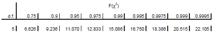
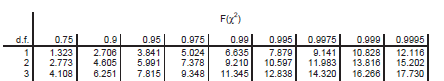
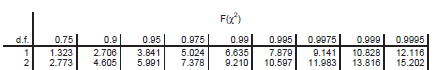

BI1363 HT 2020
Analys av kategoridata
Oktober 2020
Adam Flöhr, BT, SLU
Kategoridata

Undersöker en egenskap där de möjliga utfallen ger en kategori-indelning
Typiskt en variabel på nominalskala (t.ex art eller nationalitet) eller ordinalskala (t.ex kundnöjdhet)
Vi har \(k\) klasser och en klass relativa storlek i populationen ges av \(p_i\)
Drar ett stickprov av storlek \(n\) och tittar på antalet i stickprovet i respektive klass
Kan skatta \(p\) för respektive klass med \(\hat p = \frac{\text{antal i klassen}}{n}\)
Fallet med binär data är ett särfall där \(k = 2\)
\(\chi^2\)-fördelning
Tester av frekvenser baseras på en testfördelning som kallas en \(\chi^2\)-fördelning

En \(\chi^2\)-fördelning uppstår som summan av kvadrerade standardiserade normalfördelningar
Den defineras av en parameter, antalet frihetsgrader, som ges av antalet termer i summan
Biometri, tabell 6
Som tidigare (med normalfördelningen och t-fördelningen) kommer vi vilja uppskatta svanssannolikheten
Eftersom \(\chi^2\)-fördelningen bygger på kvadrerade värden är vi bara intresserade av den högra svansen

Tabellvärden för x-axeln betecknas \(\chi^2_{(1-\alpha, df)}\) och kan hämtas från en tabell över \(\chi^2\)-fördelningen, t.ex tabell 6 i Biometri

För ett tabellvärde motsvarande fem procent i svansen och \(df = 5\) tittar vi på \(\chi^2_{(0.95, 5)} = 11.070\)
Test av modellanpassning, schema
Hypoteser
\(H_0:\) data kommer från den antagna fördelning
\(H_1:\) data kommer inte från den antagna fördelningen
Testfunktion
\[\chi^2 = \sum_{\text{alla klasser}} \frac{(O_i - E_i)^2}{E_i}\]
där \(O_i\) och \(E_i\) är observerat respektive förväntat antal i klass \(i\)
Testfördelning
Under nollhypotesen följer \(\chi^2\) en \(\chi^2\)-fördelning med \(k - 1\) frihetsgrader, där \(k\) är antalet klasser
Förväntade värden \(E\) ska vara större än \(5\)
P-värde

P-värdet ges av arean bortom \(\chi^2\) i testfördelningen
Vid handräkning uppskattas p-värdet genom att ställa \(\chi^2\) mot ett tabellvärde
Svar
P-värdet ställs mot en förbestämd signifikansnivå (ofta 5 procent)
Vid ett lågt p-värde förkastas nollhypotesen
Vid ett högt p-värde förkastas ej nollhypotesen
Testfördelning
Under nollhypotesen följer \(\chi^2\) en \(\chi^2\)-fördelning
Antalet frihetsgrader ges av \(k - 1 = 4 - 1 = 3\)
P-värde

P-värdet ges av ytan till höger om vårt observerade \(\chi^2\)
Vi kan uppskatta p-värdet från Biometri tabell 6

Vårt observerade värde ligger precis över \(\chi^2_{(0.95, 3)} = 7.815\). P-värdet måste alltså vara strax under fem procent
En datorberäkning ger det exakta värdet \(0.04812\)
Slutsats
Det finns en statistiskt signifikant skillnad mellan våra observerade värden och den tidigare fördelningen
P-värde

p-värdet ges av ytan till höger om vårt observerade \(\chi^2\)
Vi kan uppskatta p-värdet från Biometri tabell 6

Vårt observerade värde ligger över \(\chi^2_{(0.95, 2)} = 5.991\). P-värdet måste alltså vara strax under fem procent
En datorberäkning ger det exakta värdet \(0.04116\)
Slutsats
Vi förkastar nollhypotesen
Det finns en signifikant skillnad i andelen vitfjärilar mellan områden